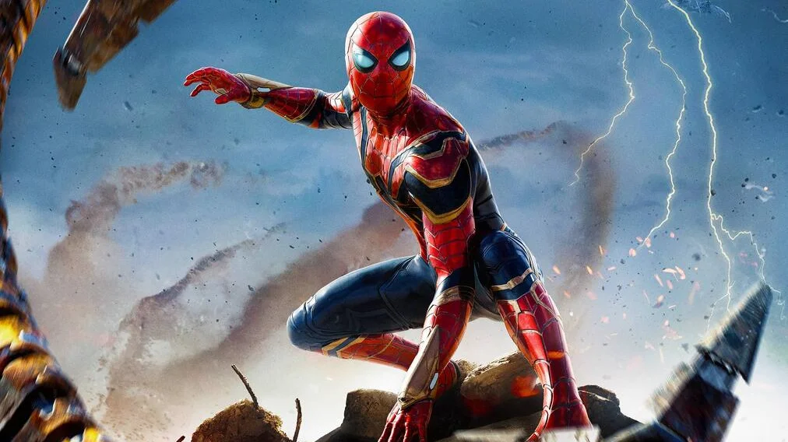

O Homem-Aranha é um dos super-heróis mais icónicos da cultura pop e do universo Marvel. Desde a sua estreia no cinema em 2002, o personagem Peter Parker ensina-nos que "com um grande poder vem também uma grande responsabilidade".
Trailer / Vídeo de Introdução
Ao longo de mais de duas décadas, diferentes atores deram vida ao herói, que criaram eras marcantes para os fãs de banda desenhada e cinema.
- Trilogia de Tobey Maguire — A era clássica dos anos 2000.
- Filmes de Andrew Garfield — O espetacular e ágil Homem-Aranha.
- Trilogia de Tom Holland — A integração no Universo Cinematográfico da Marvel (MCU).

Comparação dos Atores do Homem-Aranha
| Ator | Período | Filmes Principais | Vilão Principal |
|---|---|---|---|
| Tobey Maguire | 2002 - 2007 | Homem-Aranha 1, 2 e 3 | Duende Verde / Doc Ock |
| Andrew Garfield | 2012 - 2014 | O Espectacular Homem-Aranha 1 e 2 | Lagarto / Electro |
| Tom Holland | 2017 - 2021 | De Volta a Casa, Longe de Casa, Sem Volta a Casa | Abutre / Mysterio |
Para saberes mais sobre os próximos lançamentos e o universo do herói, visita o site oficial da Marvel.